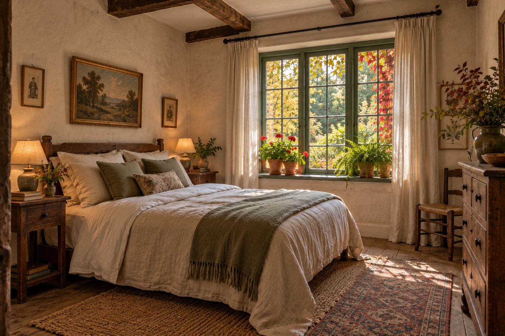
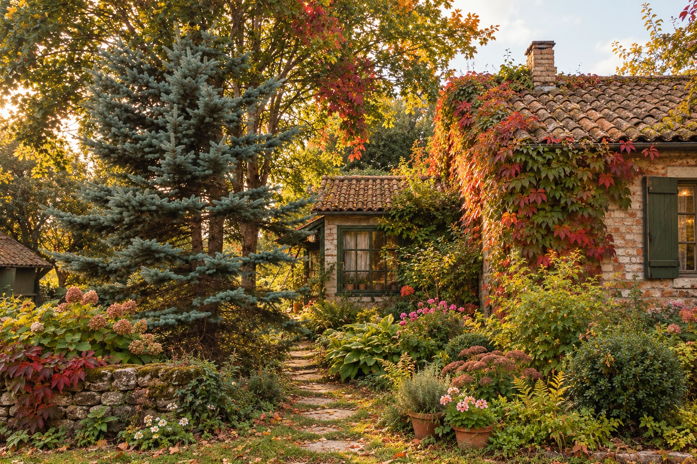
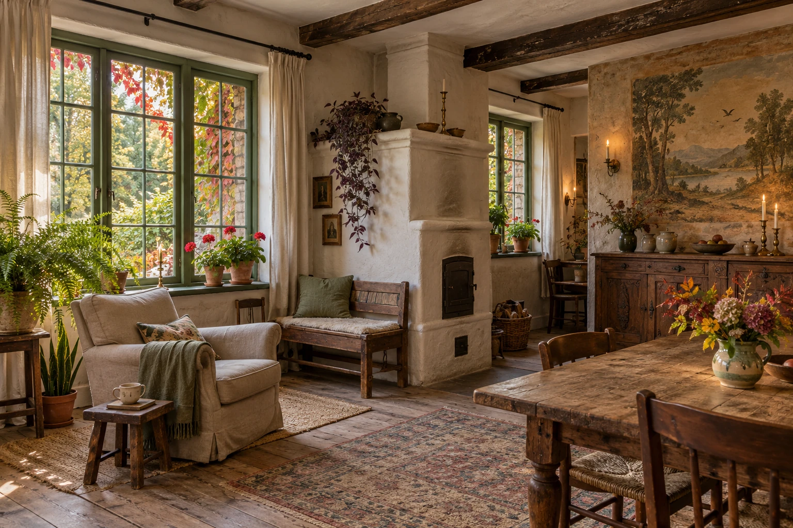
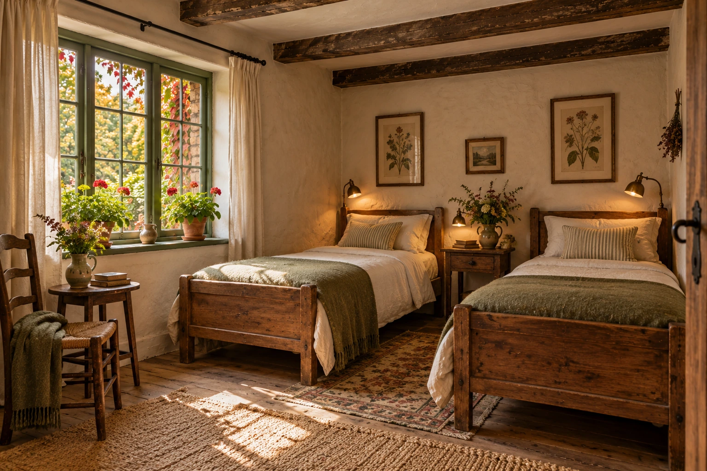
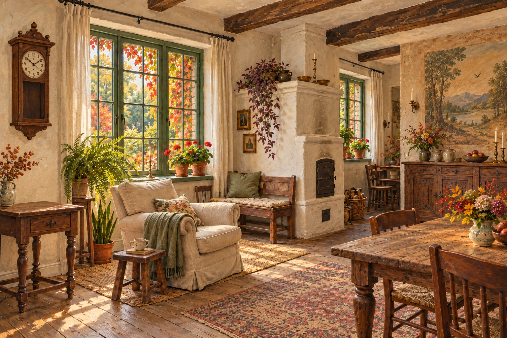
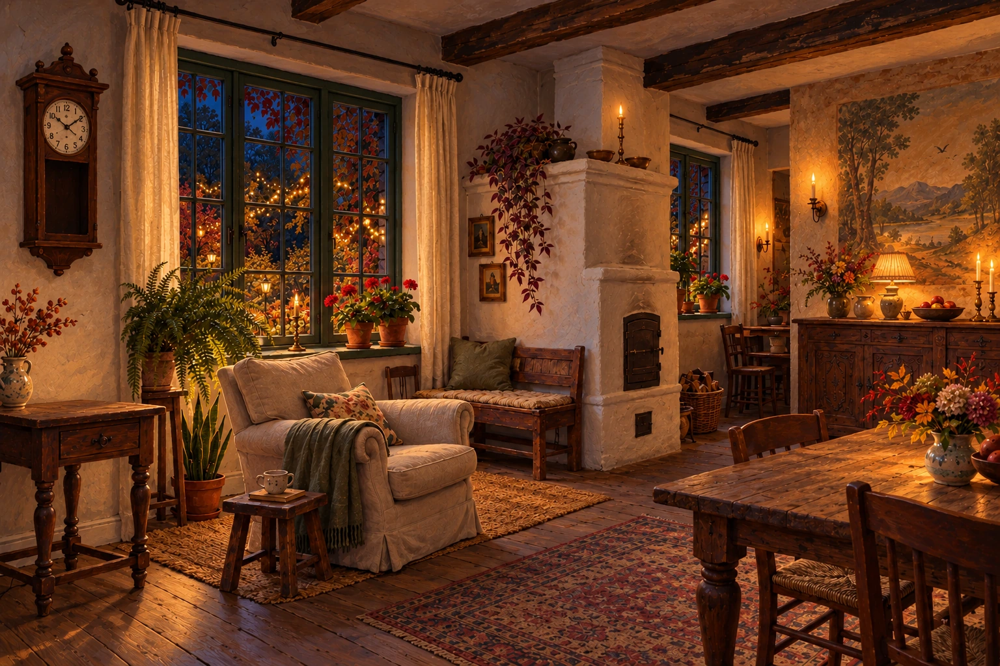

ДЛЯ ДВОИХ · ДВУСПАЛЬНАЯ КРОВАТЬ
С окнами в сад
Проснуться от света в листве. Почитать в кресле, пока дом ещё спит. Оставить окно приоткрытым и слушать сад.

ТИХИЙ ДОМ НА ОПУШКЕ ЛЕСА
Старый сад, тёплая печь и немного сказки.
Приезжайте погостить.
ЗА СТАРОЙ КАЛИТКОЙ
Дорожка теряется в саду, листья касаются окон, а в доме уже тепло. Здесь можно выспаться, дочитать книгу и провести день так, как давно хотелось.
Своя комната. Общая гостиная. Целый сад для неспешных прогулок.
ПРОГУЛКА ПО САДУ
Выберите рассвет, закат или ночь —
и посмотрите, как меняется сад вокруг дома.
Когда солнце задерживается в листве.
Пусть немного этого сада останется с вами.

Сад продолжается за окнами. И внутри.ТЕПЛО ОБЫЧНЫХ ВЕЩЕЙ
Печь хранит тепло, половицы чуть поскрипывают. На подоконнике цветёт герань, на столе — ветки из сада. Можно сесть с книгой у окна и забыть о времени.
Место, чтобы выспаться, побыть с собой и проснуться без спешки.
Общий стол, неторопливые завтраки и разговоры возле печи. Здесь приятно собраться вечером.
ДВЕ КОМНАТЫ · СВОЙ УГОЛОК ТИШИНЫ
В доме всего две гостевые комнаты. У каждой свой характер, а сад, гостиная и большой стол — общие.

ДЛЯ ДВОИХ · ДВУСПАЛЬНАЯ КРОВАТЬ
Проснуться от света в листве. Почитать в кресле, пока дом ещё спит. Оставить окно приоткрытым и слушать сад.

ДЛЯ 1–2 ГОСТЕЙ · ДВЕ КРОВАТИ
Тёплое дерево, мягкий свет и книги под рукой. Комната для неспешных разговоров или нескольких дней наедине с собой.
Утром — завтрак за общим столом. Вечером — гостиная и тепло печи.
НИЧЕГО ОБЯЗАТЕЛЬНОГО
Это лишь один из способов провести здесь день. Можно выбрать свой — или вовсе ничего не планировать.
Завтрак в гостиной. Чай, разговоры и свет из сада.
Захватить тёплый свитер и послушать, как шуршит листва.
Книга у окна или чай в саду. Время никуда не торопит.
Собраться у печи. За окном уже светятся огоньки.
ПЕРЕД ПОЕЗДКОЙ
Осталось выбрать дни и договориться с хозяйкой. Всё важное можно обсудить одним звонком.
До четырёх гостей в двух отдельных комнатах. В одной — двуспальная кровать, в другой — две отдельные. Гостиная и сад доступны всем гостям.
Проживание в выбранной комнате, завтрак за общим столом, общая гостиная и прогулки по саду. Пожелания к питанию стоит обсудить заранее.
Позвоните по номеру 123-45-67 и расскажите, когда и на сколько дней хотели бы приехать. Стоимость и возможность размещения обсуждаются с хозяйкой.
Дом находится на опушке, рядом с рекой. Схему проезда и место встречи хозяйка подскажет при обсуждении поездки.
Расскажите об этом при звонке, чтобы заранее обсудить условия и удобство размещения для всех гостей.
ЕЩЁ НЕМНОГО ПОБУДЬТЕ ЗДЕСЬ
Один поворот времени — и за окнами загорается сад.
А старый телефон приглашает договориться о приезде.


Коснитесь часов — и сменится время суток
ПРИЕЗЖАЙТЕ ПОГОСТИТЬ
Позвоните, чтобы обсудить даты,
выбрать комнату и узнать дорогу к дому.